Restaurant duTennisÉcublens
À table
-
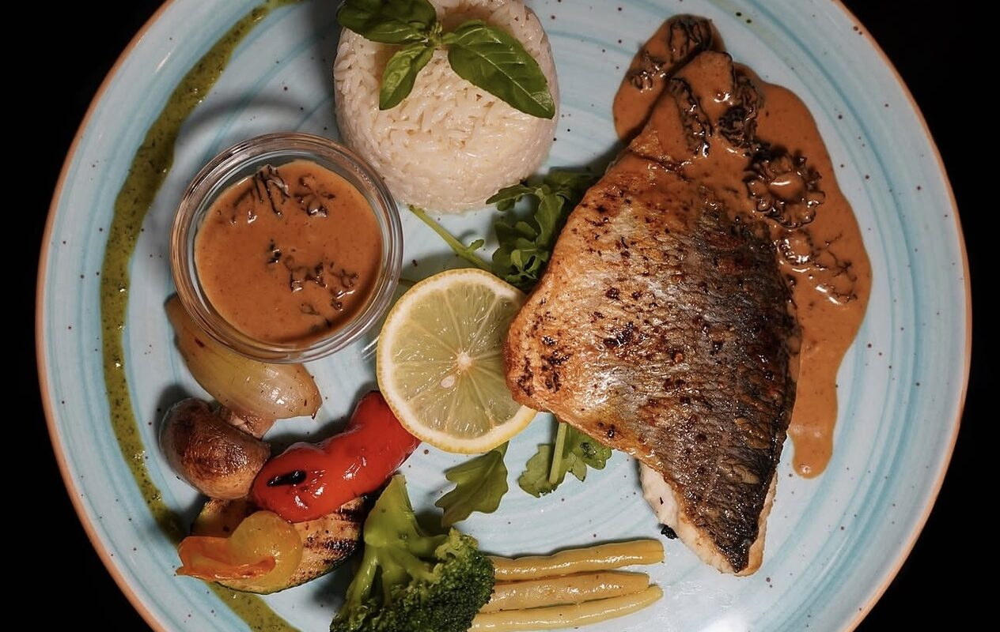
-
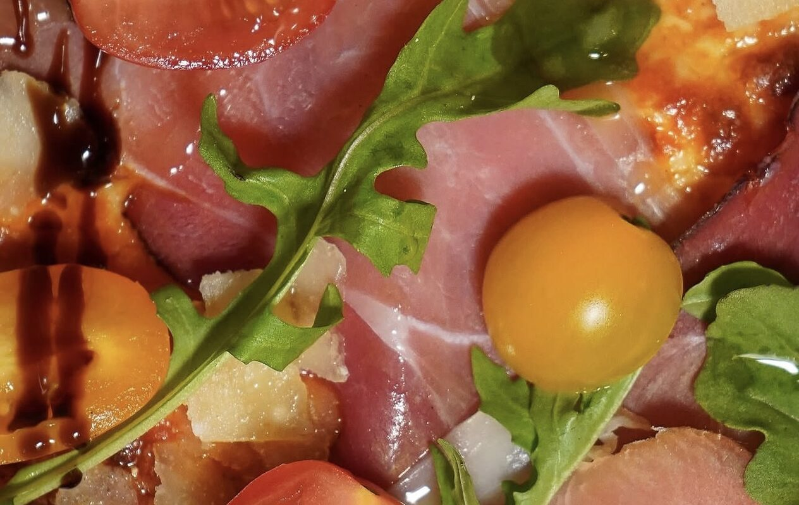
-

-
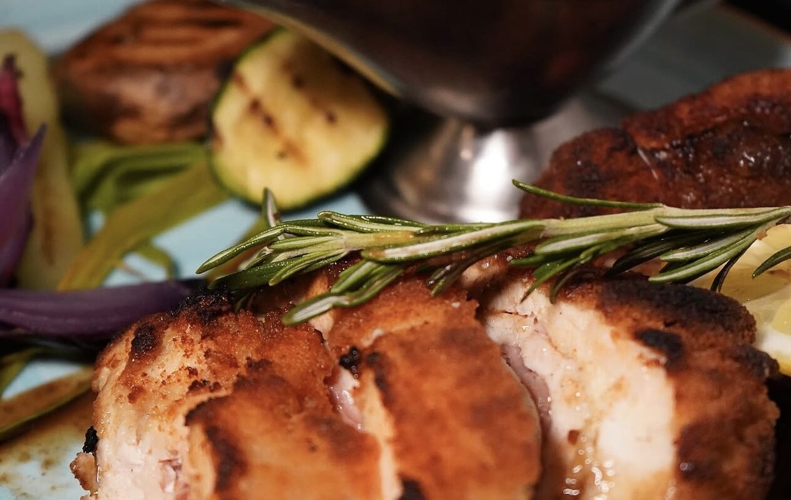
-
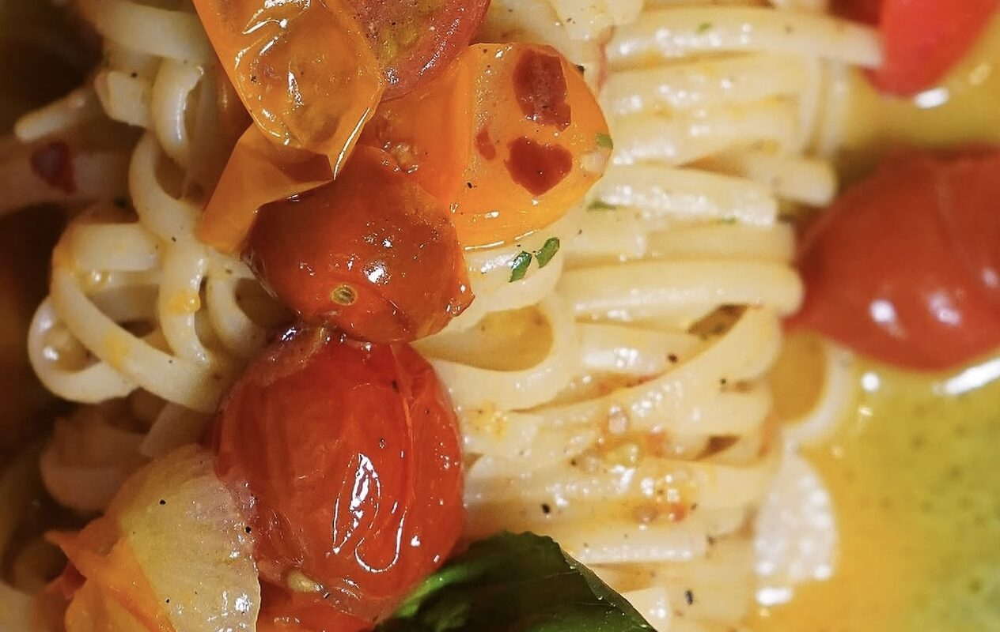
-
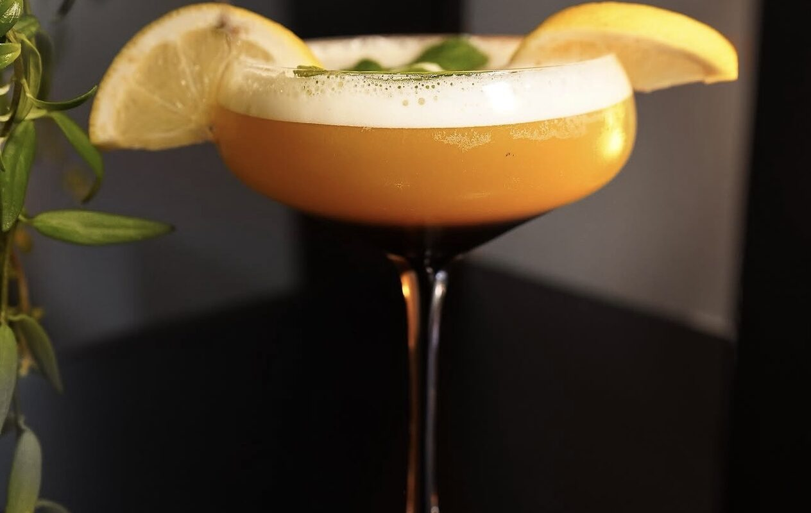
-
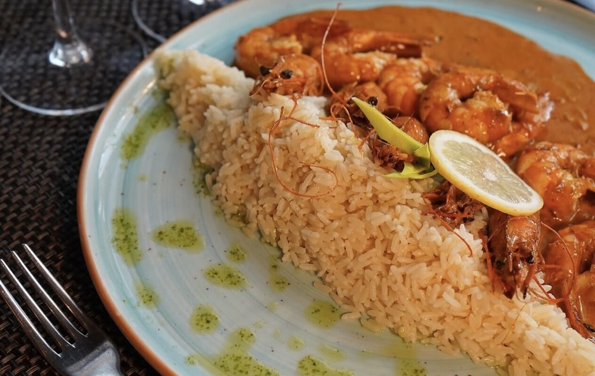
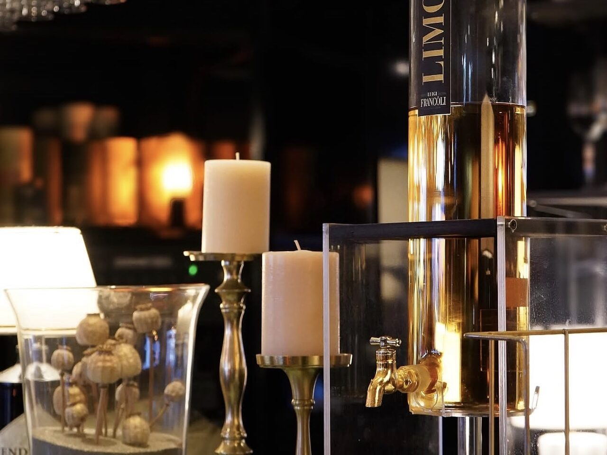
Une brasserie de club,
et le Maroc juste à côté
Les grillades et les classiques tiennent la carte : entrecôtes, filets de perche, croûtes au fromage, rösti. À côté, les tajines et les couscous, faits ici.
Le plat du jour est annoncé sur l’ardoise, à midi, du mardi au vendredi. Les grands plateaux et le mixed grill se commandent pour deux.

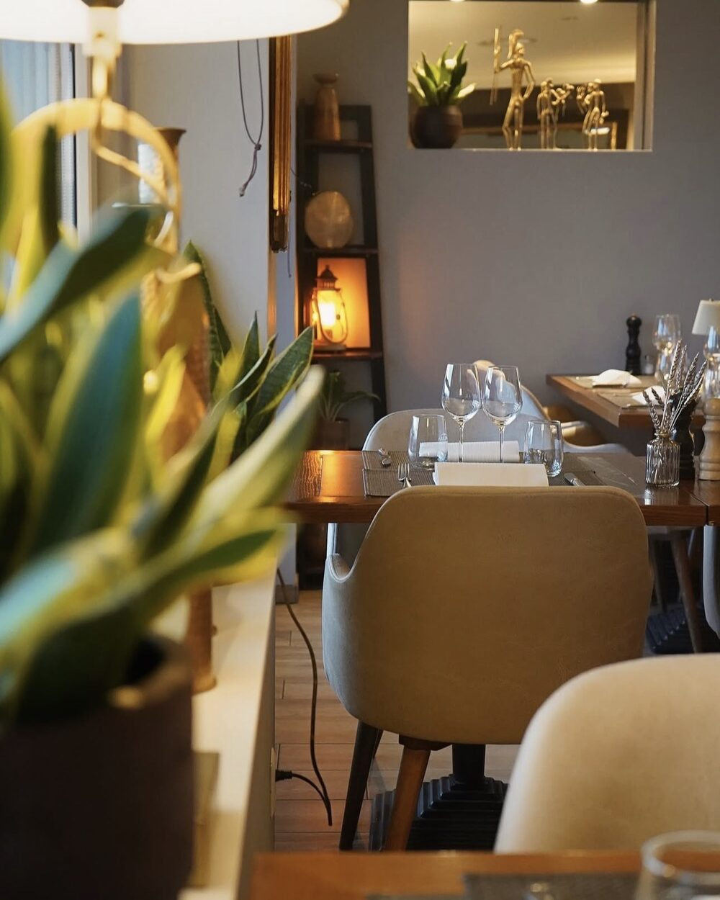


Six tajines,
et le temps qu’il faut
Poulet au citron confit, agneau aux pruneaux, kefta aux œufs. Et cinq couscous à côté, semoule roulée à la main.
Comptez vingt-cinq minutes de cuisson : on les commande en s’asseyant.

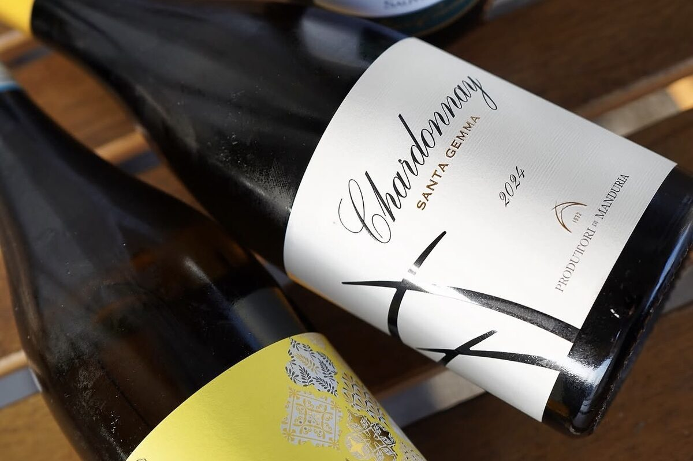
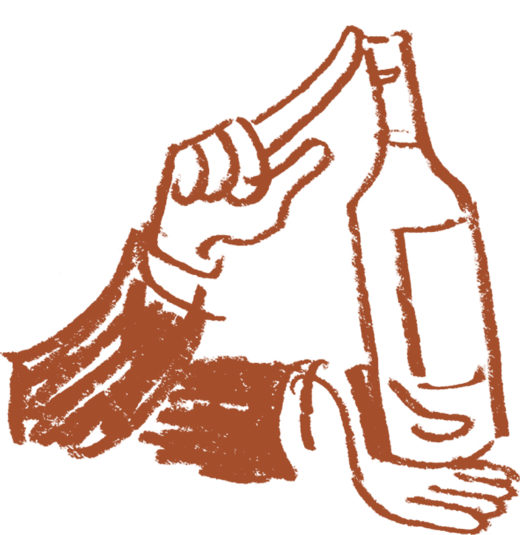
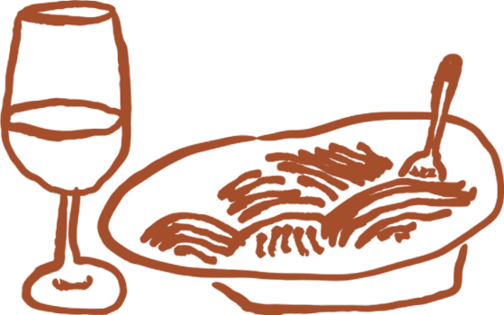
Quatre plats, quatre envies
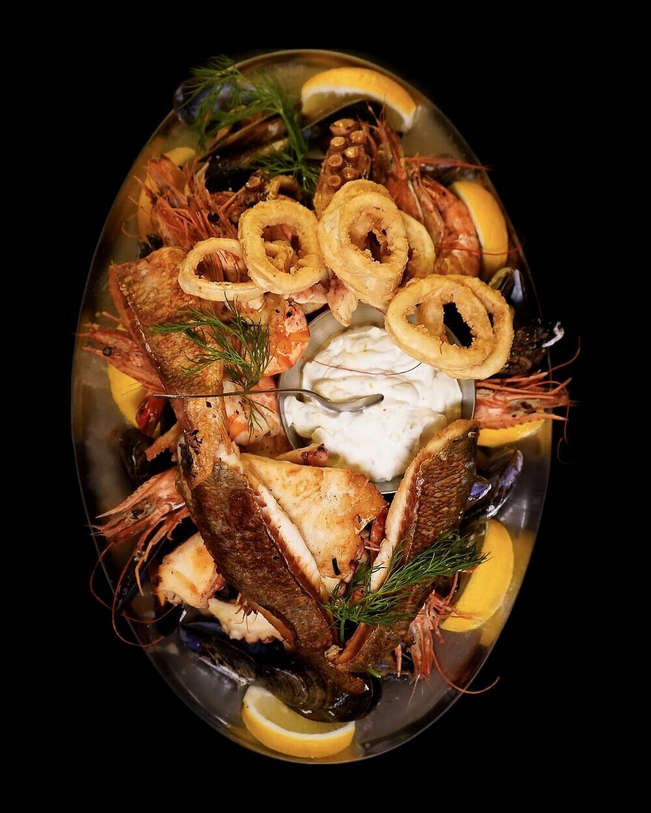
Le mixed grill du club
Entrecôte, brochette de poulet, merguez et côtelette d’agneau.
42.—
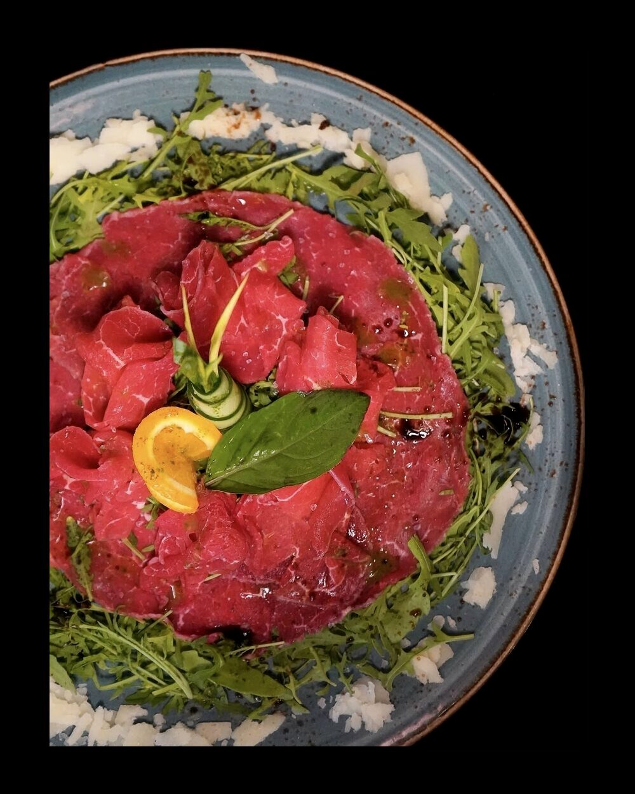
Tajine de poulet au citron confit
Olives, safran et gingembre.
29.—
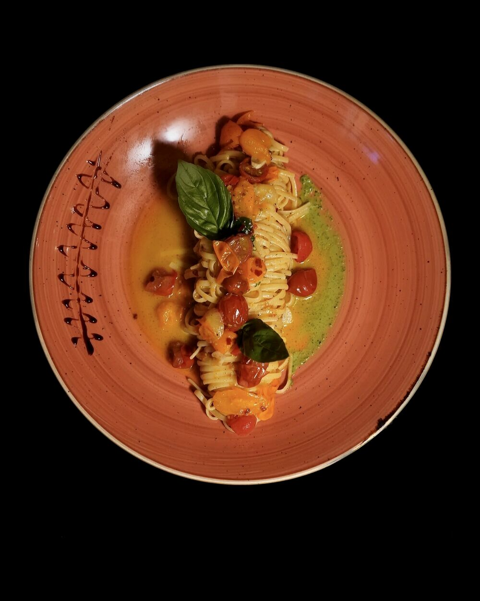
Filets de perche meunière
Beurre, citron et persil.
34.—
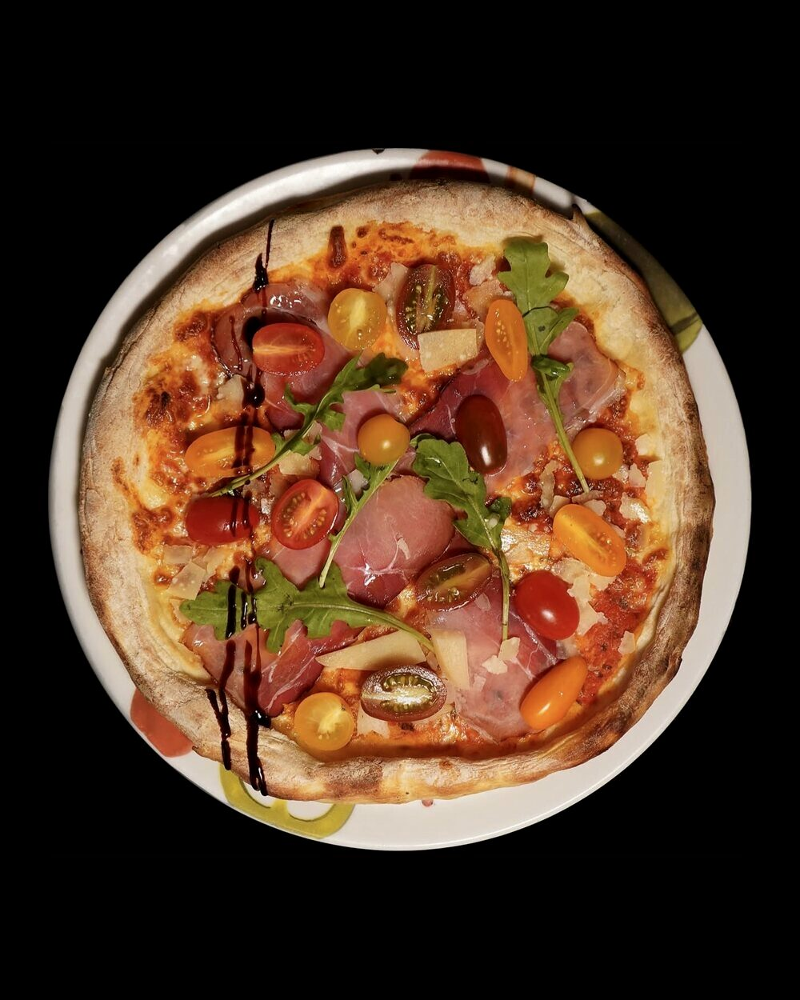
Couscous royal
Poulet, agneau, merguez et brochette.
38.—